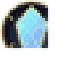

Осколки
Разлома
Тёмное фэнтези · Магия · RPG
Когда-то драконьи империи правили этим миром. Теперь от них остались пепел, руины и бледное солнце, едва пробивающееся сквозь серое небо.
В самом сердце земель зияет Разлом — рана в самой ткани реальности. Три дракона удерживают его закрытым. Не боги и не чудовища, а последние живые печати древнего мира.
Первые кровавые маги создали Кристалл Разлома, отдав за него собственные жизни. Кристалл раскололся, и три его осколка оказались у драконов.
Пока жив хотя бы один из них, Разлом останется закрытым. Но если падут все трое, печать исчезнет — и то, что ждёт по ту сторону, сможет войти в наш мир.
Тебе предстоит пройти пять земель, раскрыть правду о древней печати и решить, что заслуживает спасения: мир, каким он был, или мир, который ещё можно создать.
Пройдите пять актов и победите трёх драконов-печатей: Пепельного Вестника, Ледяную Хватку и Кровавую Корону. Каждый хранит один осколок Кристалла Разлома. Разлом откроется после гибели последнего дракона, а осколки помогут стабилизировать его. После финала доступны 30 областей Разлома, Башня на 40 этажей и режим NG+.
⚔️ Воин — не знает заклинаний, но копит Ярость от ударов и полученного урона. Тратит её на мощные способности.
🧙 Маг — слаб физически (урон от оружия вдвое ниже), но его заклинания сокрушительны. Полностью зависит от маны.
🏹 Лучник — ловкий боец дальнего боя с высоким шансом уклонения и критического удара. Накапливает Концентрацию обычными атаками, использует ядовитые стрелы и способности «Прицельный выстрел», «Уклонение» и «Отравленный наконечник».
Три пути. Одна легенда. Каким героем ты станешь?
Имя можно изменить до начала приключения.
WASD / стрелки — движение · Пробел / 1 — атака · 2 — магия · 3 — предмет · 4 — побег · 5 — блок · 6 — способность · Esc — выход
Тьма оказалась сильнее. Но смерть — это ещё не конец пути.
Возродитесь в деревне с половиной здоровья и маны.
Вы победили трёх драконов-печатей и открыли Разлом. Три осколка стабилизировали его края. Теперь решите судьбу раны между мирами.
Ваш выбор определит, останется ли Разлом частью этого мира.